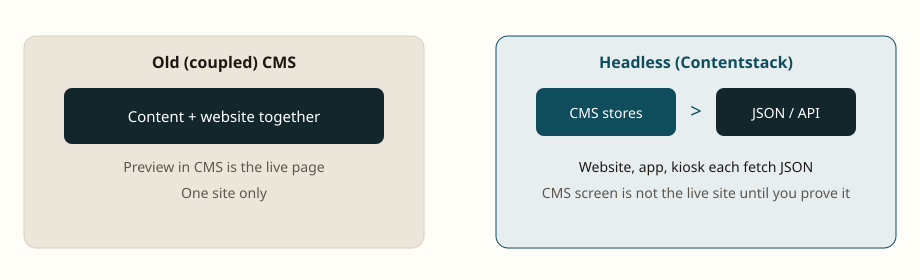
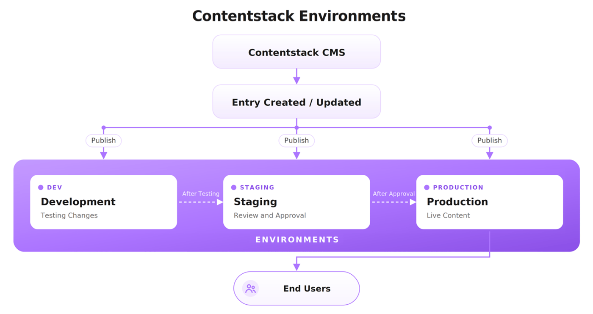

Module 01 — Headless CMS and Contentstack Boundaries
Time: 2 hours
Goal: Explain why QA tests CMS + API + app, and what Contentstack will never do.



---
1. Coupled CMS vs headless CMS
In a traditional (coupled) CMS, the same system stores content and renders HTML. Testers click Preview in the CMS and often treat that as the site.
In a headless CMS:
- Content is stored as structured fields (JSON).
- Any channel (web, iOS, email, in-store screen) requests that JSON.
- The channel decides layout, URLs, caching, and personalization.
Contentstack is headless. CMS UI correctness does not prove site correctness.
QA consequence
Every user story that says “editor updates X” needs at least two checks:
- The entry fields, workflow, and publish state in Contentstack.
- The same values on the Delivery API for the target environment and locale, then on the channel.
---
2. The five primitives
Every Contentstack project is built on:
| Primitive | One-sentence definition |
|---|---|
| Stack | Isolated project: types, entries, assets, environments, tokens |
| Content type | Schema. This is the API contract |
| Entry | One filled-in instance of a content type |
| Asset | File stored and delivered from Contentstack’s CDN |
| Environment | Named publish target (development, staging, production) |
The fundamental loop:
Model content types → create entries → publish to environments → deliver via APIQA tests every arrow in that loop.
---
3. What Contentstack does (test these)
- Stores structured content with version history on entries and content types.
- Runs workflows: stages, role assignment, publish rules, notifications.
- Publishes per environment and per locale.
- Serves REST CDA, GraphQL CDA, CMA, and Preview API.
- Hosts assets and supports image transforms via URL parameters.
- Emits webhooks / Automation Hub events (publish, unpublish, workflow change).
- Offers Live Preview, Visual Builder, Timeline, and Releases.
- Supports branches for parallel schema work.
---
4. What Contentstack does not do (do not file as CMS bugs)
| Not in CMS | Where it actually lives | How QA should test |
|---|---|---|
| Website hosting | Launch, Vercel, Azure, etc. | Deploy + cache + 404s |
| URL routing and redirects | Frontend / CDN | Slug field is only a string |
| End-user login | Auth0, Cognito, custom | CMS users ≠ site users |
| Cart, tax, payment | Commerce platform | CMS holds product *content* |
| Search index | Algolia, Elasticsearch | Webhook freshness |
| Cron / batch jobs | App infra | Scheduled publish is CMS; reports are not |
| Feature flags / app config | Flag service or env vars | Do not store flags as content unless the team agreed |
---
5. Three-layer defect model
When something looks wrong, classify it before you file:
Layer A — CMS (authoring)
Examples: required field missing, wrong reference, workflow stuck, role cannot see a locale, asset not published, modular block order wrong in the entry.
Layer B — Delivery contract (API)
Examples: CDA returns old version; GraphQL missing a field; reference is a UID only because include[] was omitted; Preview shows draft that CDA correctly hides; locale fallback unexpected.
Layer C — Experience (app)
Examples: field present in JSON but not mapped; cache TTL stale; image transform URL wrong; date format ignores locale; Visual Builder highlight on wrong DOM node.
Rule: attach evidence from the layer you claim. A screenshot of the site alone is not enough for Layer B.
---
6. Environments are not “folders”

Environments are publish destinations, each with its own delivery token.
- An entry can be published to
stagingand unpublished fromproduction. - Environments are global across branches: creating
stagingon main makes it available on other branches. - “I published it” is an incomplete sentence. Always say which environment and which locale.
Typical promotion path QA must verify:
Save (draft) → Preview → Publish staging → UAT → Publish production---
7. Knowledge check
Answer without looking back:
- Why can a perfect CMS preview still fail on the production site?
- Name the five primitives.
- Which token would you use to prove production homepage JSON?
- Is “Approved” in workflow the same as published to production?
- Who owns URL redirects — Contentstack or the app?
Expected answers are in labs/lab-01-stack-orientation.md.
---